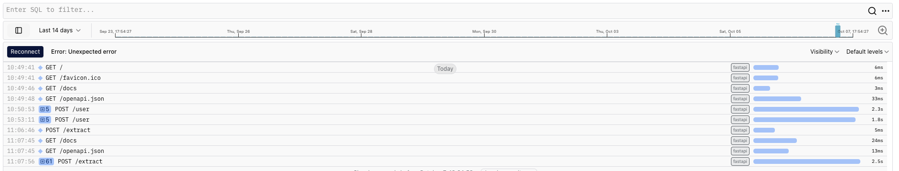

用 logfire 提高应用的可观测性
Posted on Mon 23 September 2024 in Journal
| Abstract | 用 logfire 提高应用的可观测性 |
|---|---|
| Authors | Walter Fan |
| Category | learning note |
| Status | v1.0 |
| Updated | 2024-09-23 |
| License | CC-BY-NC-ND 4.0 |
Logfire是由 Pydantic 团队打造的平台, 还有供 app 使用的 library, 我们经常提到对应用要做 LMT(Log, Metrics, Trace), Logfire 可以用来收集、存储、分析和可视化日志数据和应用性能指标。通过集成日志和度量，Logfire 提供了一个统一的界面来管理应用程序和系统的可观测性.
Logfire 其实是基于 OpenTelemetry构建的，可以使用大量现有工具和基础架构，包括许多常见 Python 包的观测(instrument)。
OpenTelemetry 是一个开源的可观测性框架，用于生成、收集、处理和导出应用程序的分布式追踪、日志和度量数据。 它旨在帮助开发者更好地监控分布式系统中的应用程序性能，并进行故障排查。
OpenTelemetry 是 CNCF（Cloud Native Computing Foundation）的项目，它统一了许多流行的监控和可观测性工具，比如 OpenTracing 和 OpenCensus。 通过 OpenTelemetry，开发者可以在不同的语言和框架中统一地生成可观测性数据（追踪、日志、指标），并将这些数据发送到不同的后端系统进行分析和可视化，如 Prometheus、Grafana、Jaeger、Zipkin 等
OpenTelemetry 的核心概念就是 LMT:
-
Logs（日志）： 日志记录应用程序在运行时输出的信息，包括错误、状态信息和其他调试数据。
-
Metrics（度量）： 用于收集关于系统性能的定量数据，例如 CPU 使用率、内存占用、请求延迟等。这些度量帮助监控应用的性能。
-
Tracing（追踪）： 用于跟踪跨越不同服务或组件的单个请求，帮助你了解整个请求的生命周期。追踪包括多个 span，每个 span 表示一次操作或请求。
Logfire 比 OpenTelemetry 更好用, 我最近用 FastAPI 写一些 LLM 的应用, 将 Logfire 集成到 FastAPI 中用于日志记录和性能度量，可以帮助监控和分析 FastAPI 应用的健康状态和性能表现。可以通过 logfire 做到
- 收集和发送 FastAPI 的请求日志。
- 记录异常并发送到 Logfire。
- 通过 Prometheus 或 Logfire 的度量功能，监控应用的性能指标。
Logfire 与 FastAPI 的集成
1. 安装依赖
Logfire 提供了适用于不同语言的 SDK，首先你需要安装 Logfire 的 Python 客户端库。通常，官方提供的 SDK 可以通过 pip 安装。
pip install logfire
假设 Logfire 提供了一个 SDK 来发送日志和指标，我们会用这个来集成 FastAPI。
2. FastAPI 日志集成
Logfire 的 SDK 一般允许你直接将应用的日志发送到它的后端。我们可以通过 FastAPI 的事件钩子来捕获日志并发送给 Logfire。
首先，配置 Logfire 的客户端实例：
from logfire import LogfireClient
from fastapi import FastAPI, Request
import logging
app = FastAPI()
# 初始化 Logfire 客户端
logfire_client = LogfireClient(api_key="your-logfire-api-key")
# 设置 FastAPI 的 logger
logger = logging.getLogger("fastapi")
logger.setLevel(logging.INFO)
@app.middleware("http")
async def log_requests(request: Request, call_next):
# 记录请求信息
response = await call_next(request)
log_data = {
"method": request.method,
"url": str(request.url),
"status_code": response.status_code,
"client_ip": request.client.host,
}
# 将日志发送到 Logfire
logfire_client.log("Request info", log_data)
return response
在这个例子中，通过 FastAPI 的 middleware 机制，在每次 HTTP 请求时捕获请求日志，并将其发送到 Logfire 平台。
3. FastAPI 度量集成
除了日志记录，还可以通过 Logfire 记录应用的性能指标，比如响应时间、CPU 和内存使用等。
import time
@app.middleware("http")
async def add_metrics(request: Request, call_next):
# 记录请求开始时间
start_time = time.time()
# 处理请求
response = await call_next(request)
# 计算响应时间
process_time = time.time() - start_time
logfire_client.metric("request_duration_seconds", process_time)
# 记录额外度量数据
metrics_data = {
"method": request.method,
"url": str(request.url),
"status_code": response.status_code,
"duration": process_time,
}
# 将度量数据发送到 Logfire
logfire_client.log("Request metrics", metrics_data)
return response
这个 middleware 会计算每次请求的处理时间，并通过 Logfire 的度量功能发送响应时间等性能数据。
4. 异常处理日志
如果 FastAPI 中发生了未捕获的异常，你可以通过全局异常处理器记录日志并将其发送到 Logfire。
from fastapi import HTTPException
from starlette.middleware.errors import ServerErrorMiddleware
@app.exception_handler(HTTPException)
async def http_exception_handler(request: Request, exc: HTTPException):
# 捕获 HTTP 异常并记录到 Logfire
logfire_client.log("HTTP Exception", {"status_code": exc.status_code, "detail": exc.detail})
return JSONResponse(status_code=exc.status_code, content={"detail": exc.detail})
@app.middleware("http")
async def catch_exceptions_middleware(request: Request, call_next):
try:
return await call_next(request)
except Exception as exc:
logfire_client.log("Unhandled Exception", {"exception": str(exc)})
raise exc # 继续抛出异常
5. 可选：Prometheus 度量与 Logfire 集成
你还可以使用 FastAPI 与 Prometheus 结合，然后将 Prometheus 收集的度量数据导入 Logfire。
首先，使用 prometheus-fastapi-instrumentator 进行集成。
pip install prometheus-fastapi-instrumentator
然后在 FastAPI 应用中添加 Prometheus 的指标收集器：
from prometheus_fastapi_instrumentator import Instrumentator
# 初始化 Prometheus 指标收集器
Instrumentator().instrument(app).expose(app)
@app.on_event("startup")
async def on_startup():
# 如果 Logfire 支持从 Prometheus 获取数据，可以配置 Prometheus 度量推送到 Logfire
pass
这个配置可以让 Prometheus 采集到 FastAPI 应用的性能数据，并将其推送到 Logfire 平台。
用 Logfire 记录和观测大模型交互的性能
举例如下
#!/usr/bin/env python3
from pydantic import BaseModel
from fastapi import FastAPI
from openai import AsyncOpenAI
import logfire
from async_llm_agent import AsyncLlmAgent
import asyncio
from collections.abc import Iterable
from fastapi.responses import StreamingResponse
# request
class UserData(BaseModel):
query: str
# response
class UserDetail(BaseModel):
name: str
age: int
class MultipleUserData(BaseModel):
queries: list[str]
app = FastAPI()
agent = AsyncLlmAgent()
#logfire.configure(pydantic_plugin=logfire.PydanticPlugin(record="all"))
logfire.configure(service_name='lazy-llm-agent')
logfire.instrument_pydantic()
logfire.instrument_openai(agent.get_llm_client(), suppress_other_instrumentation=True)
logfire.instrument_fastapi(app)
@app.post("/user", response_model=UserDetail)
async def endpoint_function(data: UserData) -> UserDetail:
system_prompt = "You are a smart AI assitant"
user_prompt = f"Extract: `{data.query}`"
user_detail = await agent.get_object_response(system_prompt, user_prompt, UserDetail)
return user_detail
@app.post("/many-users", response_model=list[UserDetail])
async def extract_many_users(data: MultipleUserData):
async def extract_user(query: str):
system_prompt = "You are a smart AI assitant"
user_prompt = f"Extract: `{data.query}`"
user_detail = await agent.get_object_response(system_prompt, user_prompt, UserDetail)
logfire.info("/User returning", value=user_detail)
return user_detail
coros = [extract_user(query) for query in data.queries]
return await asyncio.gather(*coros)
@app.post("/extract", response_class=StreamingResponse)
async def extract(data: UserData):
system_prompt = "You are a smart AI assitant"
user_prompt = f"Extract: `{data.query}`"
users = await agent.get_objects_response(system_prompt, user_prompt, UserDetail, stream=True)
async def generate():
with logfire.span("Generating User Response Objects"):
async for user in users:
resp_json = user.model_dump_json()
logfire.info("Returning user object", value=resp_json)
yield resp_json
return StreamingResponse(generate(), media_type="text/event-stream")
def act_as_client(port: int):
import requests
response = requests.post(
f"http://127.0.0.1:{port}/extract",
json={
"query": "Alice and Bob are best friends. \
They are currently 32 and 43 respectively. "
},
stream=True,
)
for chunk in response.iter_content(chunk_size=1024):
if chunk:
print(str(chunk, encoding="utf-8"), end="\n")
if __name__ == "__main__":
import argparse
parser = argparse.ArgumentParser()
parser.add_argument('--role','-r', action='store', dest='role', help='specify role: client|server')
parser.add_argument('--port','-p', type=int, action='store', dest='port', default=2024, help='specify listen port')
args = parser.parse_args()
if (args.role=="client"):
act_as_client(args.port)
else:
import uvicorn
uvicorn.run(app, host="localhost", port=args.port)
要点:
- 配置Logfire, 注意要先在 https://logfire.pydantic.dev 上注册你的项目, 获取一个 token
logfire.configure(service_name='lazy-llm-agent')
# 上面这行代码配置了 logfire 的 service_name, 其中参数 token 没有显式传入, 因为已经在环境变量中配置了 LOGFIRE_TOKEN=xxx
logfire.instrument_pydantic()
# 上面这行代码配置了logfire，使其记录所有通过pydantic模型进行的数据交换。
- 植入监测 Instrumentation:
logfire.instrument_fastapi(app)：
# 上面这行代码将FastAPI应用与logfire集成，以便自动记录API请求和响应。
logfire.instrument_openai(self._client, suppress_other_instrumentation=False)：
# 上面这行代码将AsyncOpenAI客户端与logfire集成，以便记录与OpenAI API的交互。
-
记录日志:
-
在extract_many_users函数中，
logfire.info("/User returning", value=user_detail)记录了用户详细信息的返回。 -
在extract函数的generate生成器中，
logfire.info("Returning user object", value=resp_json)记录了流式响应中的用户对象。 -
使用Span:
with logfire.span("Generating User Response Objects"):
# 上面的上下文管理器用于创建一个日志跨度，记录生成用户响应对象的时间和细节。
测试步骤
- 启动服务端程序
% ./instructor_server.py -r server
- 启动客户端程序
% ./instructor_server.py -r client
Logfire project URL: https://logfire.pydantic.dev/walterfan/lazy-rabbit-agent
{"name":"Alice","age":32}
Logfire project URL: https://logfire.pydantic.dev/walterfan/lazy-rabbit-agent
{"name":"Bob","age":43}
这样我们就可以看到我们的应用程序与大模型的交互次数以及所耗费的时间

参考链接
- 参考文章 https://python.useinstructor.com/blog/2024/05/03/fastapi-open-telemetry-and-instructor
- 上述例子的源码:
- https://github.com/walterfan/lazy-rabbit-agent/blob/master/example/instructor_logfire.py
- https://github.com/walterfan/lazy-rabbit-agent/blob/master/example/async_llm_agent.py